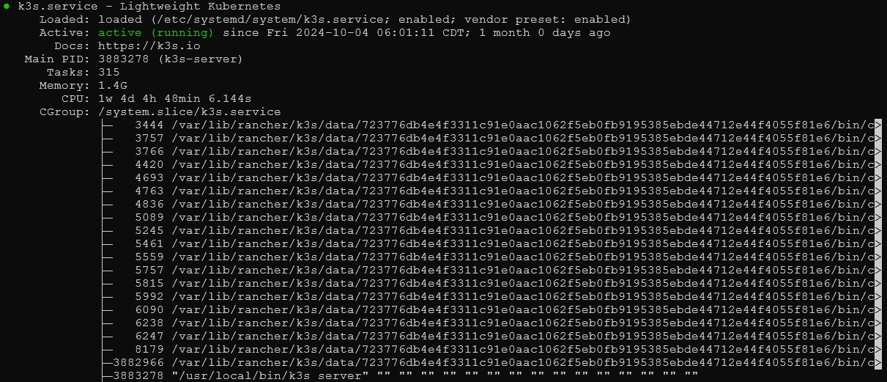
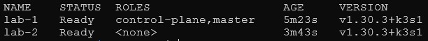

Much of this document has been lifted and paraphrased from the official k3s documentation that can be found here: k3s.
Kubernetes (K8s) is a powerful but complex system for running cloud applications - K3s is like its streamlined sibling, designed to be much simpler while keeping the important features. Created by Rancher Labs, K3s packs everything you need into a single file smaller than 40MB, making it perfect for scenarios where resources are limited, like development environments or edge computing devices. It comes with essential tools pre-installed and can run on hardware as modest as a Raspberry Pi, requiring just 512MB of RAM and 1 CPU. For tech teams looking to get started with container orchestration without the complexity of full Kubernetes, K3s offers a production-ready solution that’s easier to manage and maintain.
The first step to installing and running a K3s cluster involves choosing an operating system that can handle K3s. I choose Ubuntu for its simplicity, ease of use, and continuing security updates. A guide for installing the latest version of Ubuntu can be found here.
Setting up a K3s cluster is as easy as starting a control plane by calling the base install script from k3s.io:
curl -sfL https://get.k3s.io | sh -This command will download all necessary packages and dependencies for K3s. It will also start the control plane on the computer that the command was run on.
To add additional nodes, which K3s calls “agent nodes”, run this command on the computer that will be added to the cluster:
curl -sfL https://get.k3s.io | K3S_URL=https://myserver:6443 K3S_TOKEN=mynodetoken sh -The K3S_URL variable should be set to the
local IP of the control plane computer when starting the
cluster. the easiest way to find the local IP in ubuntu is
to use the command:
hostname -IThe output should look something like:
192.168.0.354 172.54.2.5 10.40.5.1Most computers use the IP address range 192.168.0.0 to 192.168.255.255 for local IP identification. In this case, the computer is reachable on the local network (the network that is not facing the internet) at an IP of 192.168.0.354.
The K3S_TOKEN variable is used as a
passkey to verify that the agent node trying to attach to
the k3s cluster is a valid agent. The
K3S_TOKEN for the cluster can be found on the
control plane computer (the computer that the initial k3s
cluster was started on) by navigating to
/var/lib/rancher/k3s/server/node-token.
Now that the control plane and agent nodes have been started, lets check to make sure everything is up and running correctly on the control plane computer with the command:
sudo systemctl status k3sif the k3s service is running, then we should see next to the “Active:” row, “active (running)”:

The next step is to verify the presence of our agent nodes. All we need to do is run the command:
sudo kubectl get nodes(We use sudo here to run kubectl commands because this function is only accessible by the root user)
The output should show the names, status, roles, age, and version of each node in your cluster. the control plane computer will have “control plane,master” roles, and your agent nodes will have “worker” roles assigned:

If all looks correct, then congrats! K3s is up and running, but there are no services running or attached. The next step is to start a deployment within the cluster, our guide on starting a simple deployment in K3s can be found here.